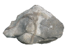
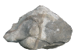

sansuisounds
枯山水
ABOUT
Welcome to SansuiSounds, where you can create, and listen to, your very own digital zen garden. Based on the ancient Japanese gardening style of Karesansui, place stones and bonzai trees around your sandbox to create your own unique design.
Need a hand? Click on START for more instructions.
Like what you see? Check out more of my work at the links below.
A project by Becca Burten.
START
Ready to start? Drag and drop the items into your sandbox, including as many as you like.
Once satisfied with your design...it's time to rake!
Press the play button at the bottom of the screen to watch as a rake pulls across the garden, drawing fine lines in the 'sand' around your designs
Make sure you have your volume on-- these five-toothed rakes are actually creating musical staves, and your stones have become the notes! As the rake encounters these objects on its path, you can listen to the soothing chimes of your own design.
When it hits the final note, you can play it again to enjoy your work, or clear the sand and start your new sansuisound-- no two are the same!

 
